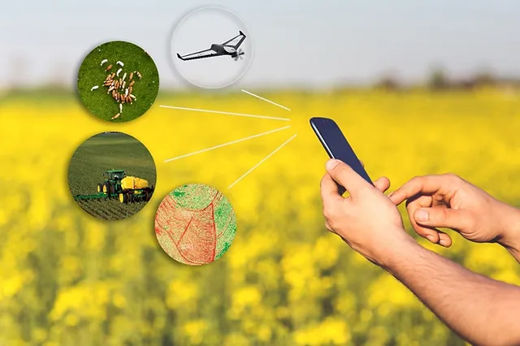

A vida no campo depois foi algo presente em nossa sociedade, desde os primórdios da humanidade, porem nos últimos 50 ano a via rural brasileira diminuiu consideravelmente como mostrado pelo IBGE, isso se deve porque muitas pessoas se mudam para as cidades em busca de trabalho e melhores condições de vida para suas famílias, como acesso mais fácil nos estudos para seus filhos onde às vezes morando no campo não e teria tanto aceso, falta de assistência medica.
A influência da tecnologia para a vida no campo
Com a chegada da tecnologia muitos dos problemas encontrado a quem morava no campo estão sendo resolvido, a educação, por exemplo, agora com o avanço tecnológico se tem a possibilidade de se fazer um ensino a distância utilizando-se a aula online, por esses motivos agora muitos jovens estão regressando ao campo, já que e não encontram mais tantas dificuldades.
A volta das pessoas para o campo acarretará muitas melhoras para a agropecuária, visto que poderá aumentar as produções, além das modernizações tecnológicas que potencializarão ainda mais.
